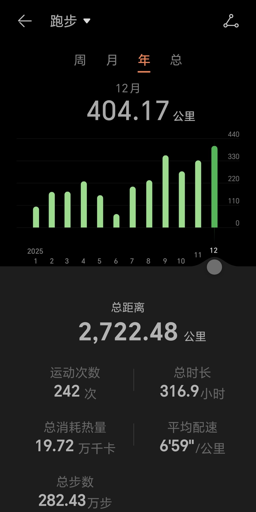

2025，在路上的一年
来自我的 2025 年度运动与旅行记录。
- 年度跑步
- 2,722 km
- 山野徒步
- 1,564 km
- 徒步累计爬升
- 79,152 m
- 年度骑行
- 2,147 km
- 徒步出发
- 85 次
- 户外运动投入
- 830 小时
不同运动与出行平台的记录可能交叉，里程不直接相加。
比赛记录
- 马拉松：Sub 3 hours。 2025 年 10 月首次参加全马。
- 半程马拉松：1 小时 23 分。 全年三场，取个人最佳。
- 越野跑：三场。 累计 60.5 公里，爬升 3,803 米。
山野与城市
五台山、南太行、双黄连东北灵、三峰大环线……2025 年徒步 85 次，旅行走过 53 个国内城市、15 个海外城市，也在北京点亮了 200 个城市角落。
年度记录
